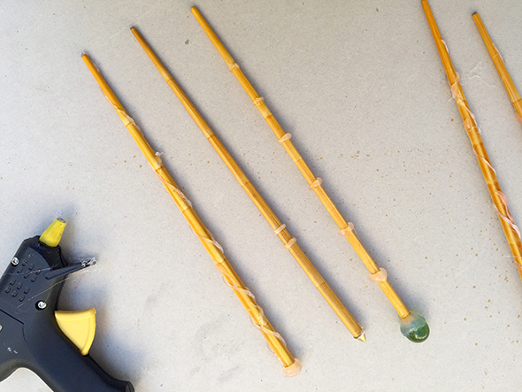

We had our first session about making magic wands of Harry Potter and his colleagues. But it won´t be the last time because the results are incredible. With a silicone pistole you make the forms arround chinese chopsticks. Ones you finish you mhave to mix latex with pigemts until you have the color you like. You paint the wand... and you can start playing beeing a magician!